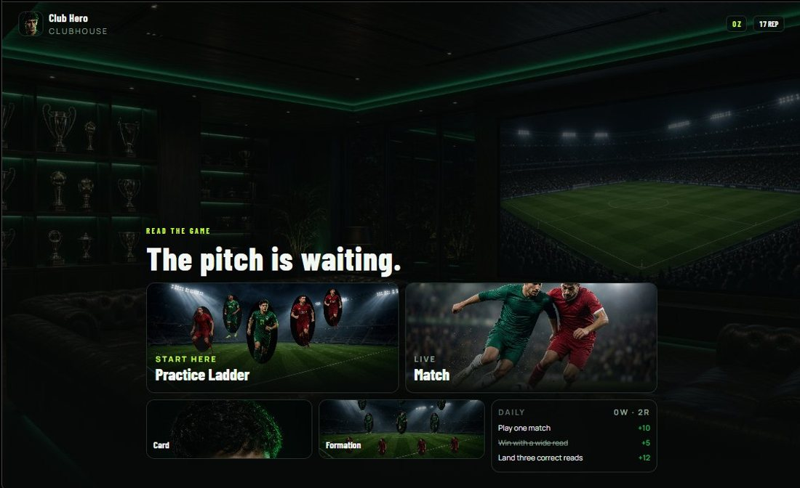

ZAP FC
Designing strategy around human psychology
An onchain football strategy game built around simultaneous decisions and psychological gameplay.

ZAP FC is a fully onchain football strategy game built on Starknet, designed around psychological prediction rather than conventional football mechanics. Instead of dribbling, aiming, or mastering timing, two players simultaneously commit to hidden decisions, attempting to anticipate each other's next move. From a product perspective, the interesting challenge is making a mind game feel like football while keeping its underlying rules understandable. The UX revolves around communicating intent, uncertainty, and consequences clearly, ensuring players understand what they're deciding and why the outcome occurred. The commit-reveal architecture also introduces a trust requirement: neither player should be able to see or manipulate the other's decision before both have committed. Every interaction and presentation decision should reinforce the central mechanic: you're not playing the pitch; you're playing the person reading it.
Play ZAP FCContext
Exploring how football can become an enjoyable onchain game.
Architecture
A two-player strategy game built around hidden decisions, simultaneous commitment and outcome resolution.
UX decisions
Football provides the familiar visual language, while the underlying experience is a mind game.
Players should understand their choices without needing to understand complicated blockchain mechanics.
Result
Moving wallet connection to after play showed the same pattern in ZAP FC. Many players also played without realising it was an onchain game, which was the goal: keep the architecture out of the player's way.
Principle
A mind game wearing football's clothes.